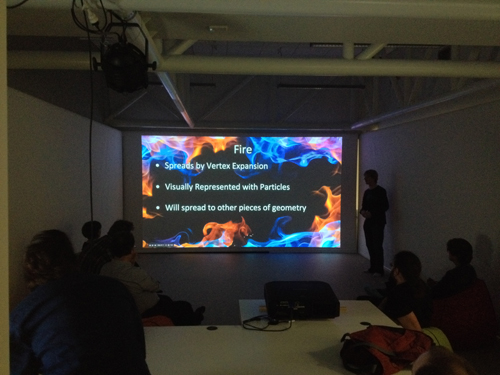
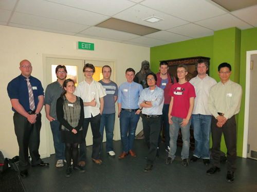
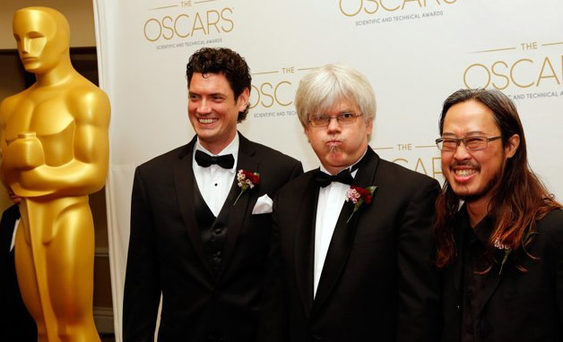
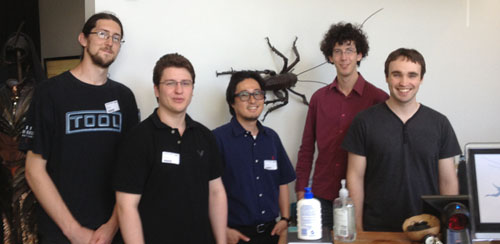

-
COMP 472 Final Projects Submitted
COMP 472 students have completed their final projects for 2015 and the results look great.
Check out two of their final project videos, hosted by YouTube:
“Too Crowded” by Iury Painelli, Snehal Poojary, and Robbie Fordyce
“Tour Into Pictures” by Wee Kiat, Yi Liu, and Joker JK
-
Internship at Weta
Weta Digital offered three student internships for practicum course (DSDN463). Joshua Scott, Christopher Dean and Dominik Schmid will work at Weta Digital for computer graphics R&D projects during the 2nd trimester of 2014.
-
Student presentation at VUW
Alasdair Coull and Miguel Sepulveda, industry mentors from Weta Digtal, have guided students project for COMP472 (Project in Computer Graphics Programming). Members of the Weta R&D group visited our computer graphics lab for watching the final project presentations from COMP472.

-
Student presentation at Weta
Students from COMP308 (Introduction to Computer Graphics) visited Weta Digital in December to show their final projects.

-
Internship at Weta
Weta Digital offered two student internships for practicum course (DSDN463). Andrew Chalmers and Melby Ruarus will work at Weta Digital for computer graphics projects during the 2nd trimester of 2013.
-
Weta PHD Scholarship Signing
Now, a new PhD scholarship in Computer Graphics has been established at Victoria by the leading visual effects company. The scholarship covers PhD fees for three years, an annual stipend of $25,000. See more scholarship details on Victoria Univeristy Scholarship & Prizes page. Read more about the news story on Stuff.co.nz

-
The Academy Sci-tech Awards in 2013
One of our computer graphics teachers received a Sci-Tech Academy Award this February. It was for a technique called PSD that The Academy statement describes as “a foundational technique in the creation of computer-generated characters.”

-
Student Presentation at Weta
Students from COMP308 visited Weta Digital in January to show their final projects. COMP308 is the core undergraduate graphics programming course in Victoria University’s new graphics programme. It covers 3D computer graphics pipelines and OpenGL programming.

-
First Permanent Faculty Start
The first full-time faculty for the graphics programme started in Trimester 2. Rhazes Spell is teaching MDDN 311 Postproduction and Special Effects, and Taehyun Rhee is teaching COMP 308 Introduction to Computer Graphics.
-
Comp 440, 441 Students Show Work
An open showing of the final projects from COMP 440 and 441 drew visitors from local industry including Weta. The courses were taught by Shane Cooper of Weta Digtal. They covered programmatic techniques for dealing with high-complexity scenes in Maya and Renderman, including the creation of proxy representations and geometry generation in the renderer.